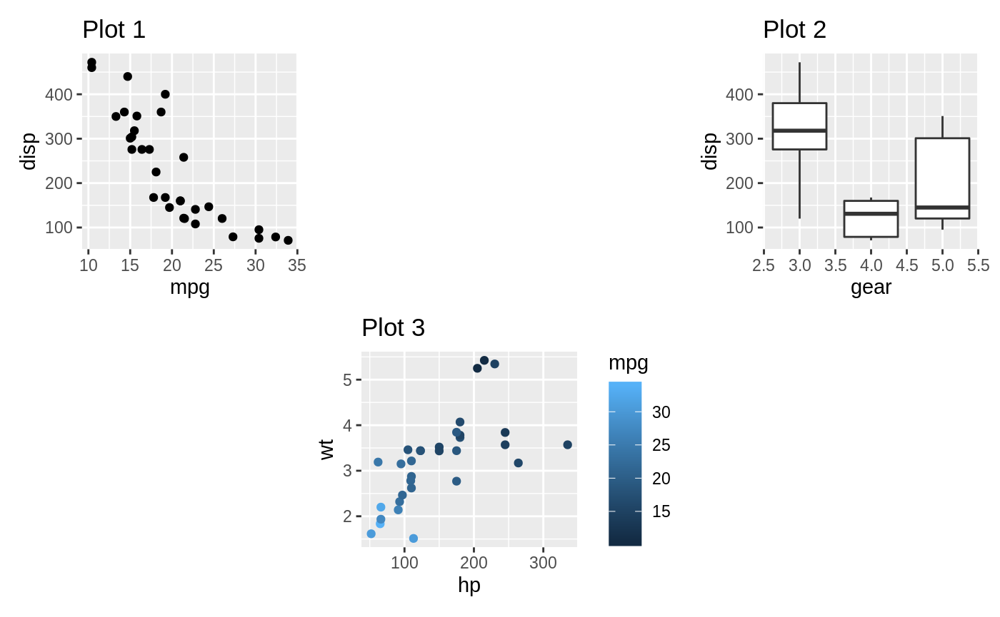
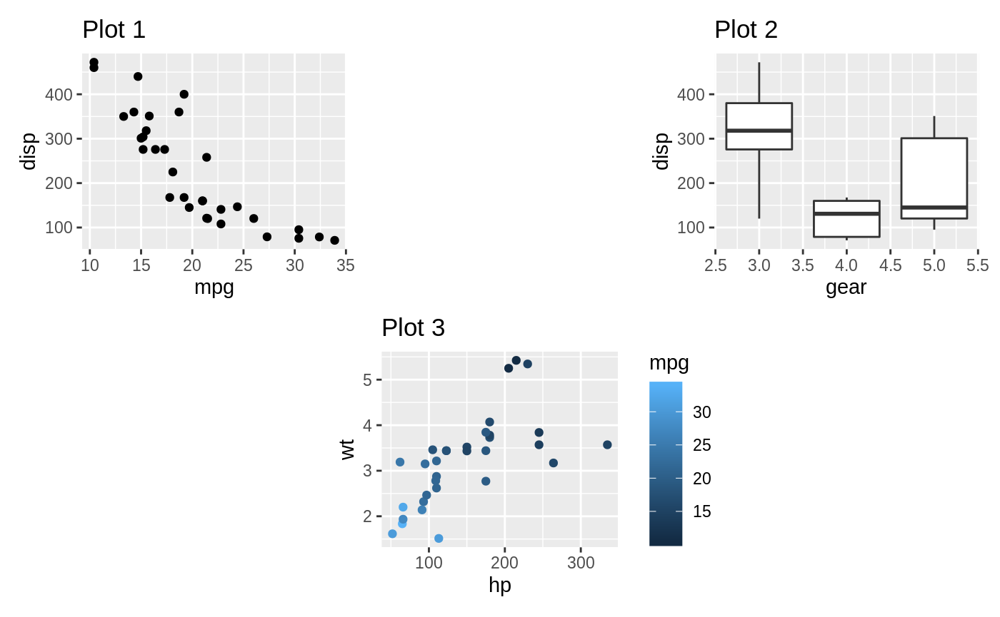
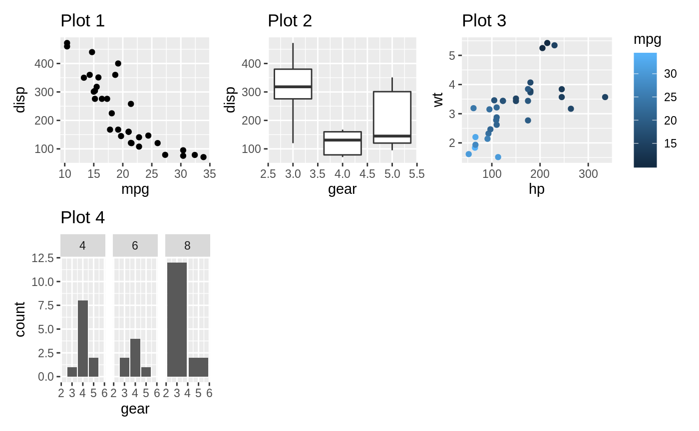
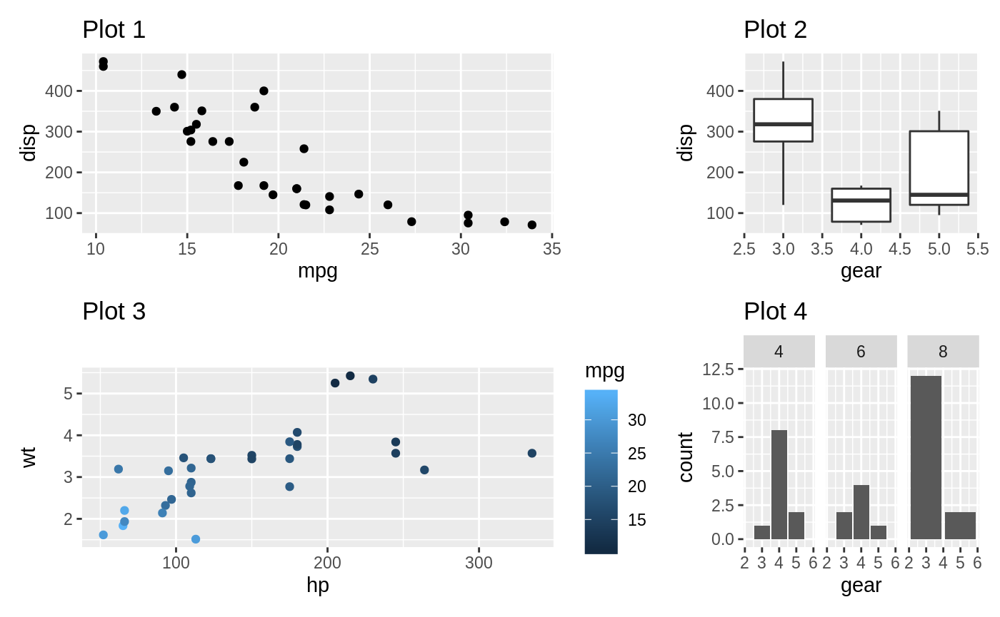
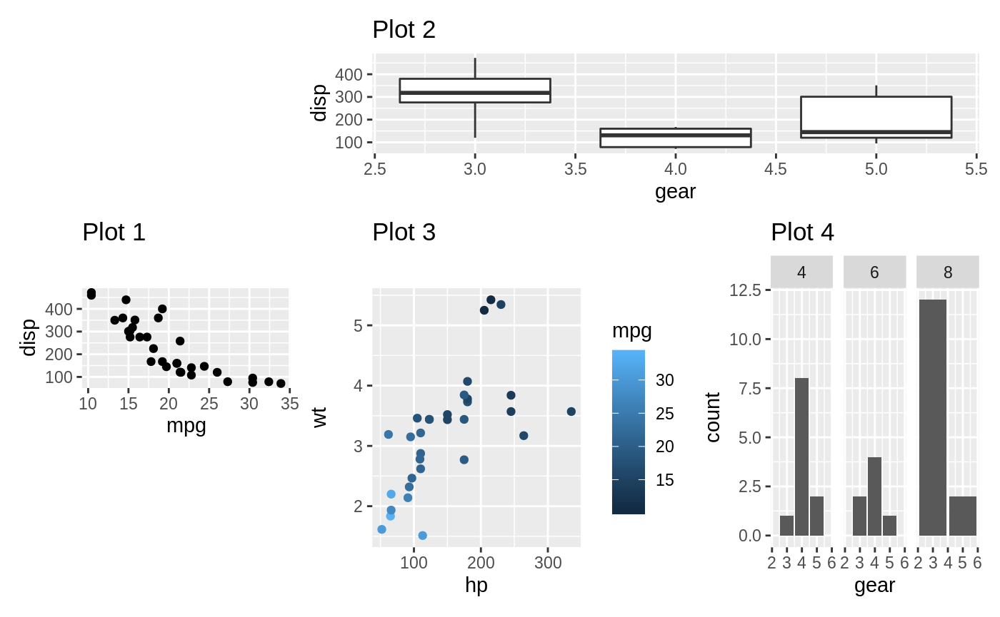
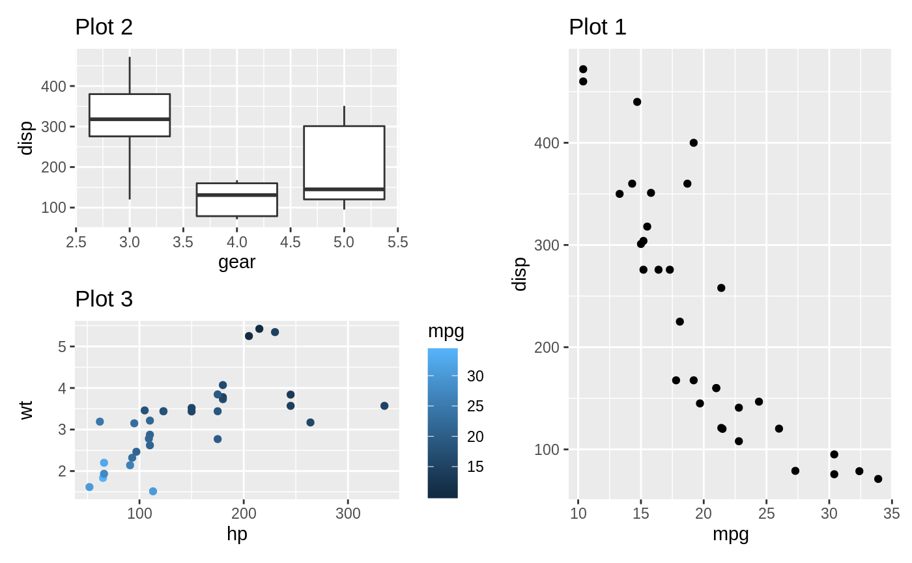
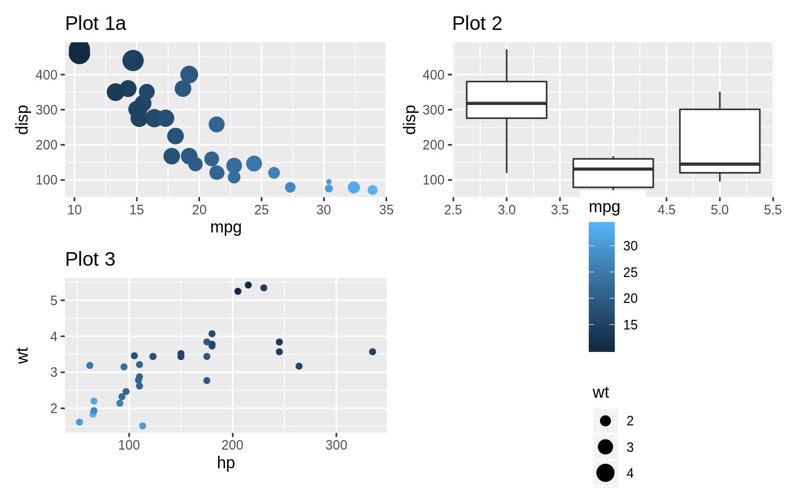

While quite complex compositions can be achieved using +, |, and /, it may be necessary to take even more control over the layout. All of this can be controlled using the plot_layout() function along with a couple of special placeholder objects. We’ll use our well-known mtcars plots to show the different options.
library(ggplot2)
p1 <- ggplot(mtcars) +
geom_point(aes(mpg, disp)) +
ggtitle('Plot 1')
p2 <- ggplot(mtcars) +
geom_boxplot(aes(gear, disp, group = gear)) +
ggtitle('Plot 2')
p3 <- ggplot(mtcars) +
geom_point(aes(hp, wt, colour = mpg)) +
ggtitle('Plot 3')
p4 <- ggplot(mtcars) +
geom_bar(aes(gear)) +
facet_wrap(~cyl) +
ggtitle('Plot 4')Adding an empty area
Sometimes all that is needed is to have an empty area in between plots. This can be done by adding a plot_spacer(). It will occupy a grid cell in the same way a plot without any outer elements (titles, ticks, strips, etc.):

It is important to understand that the added area only corresponds to the size of a plot panel. This means that spacers in separate nesting levels may have different dimensions:

Controlling the grid
If nothing is given, patchwork will try to make a grid as square as possible, erring to the side of a horizontal grid if a square is not possible (it uses the same heuristic as facet_wrap()). Further, each column and row in the grid will take up the same space. Both of these can be controlled with plot_layout()


when grid sizes are given as numerics, it will define the relative sizing of the panels. In the above, the panel area of the first column is twice that of the second column. It is also possible to supply a unit vector instead:

In the last example the first row will always occupy 5cm, while the second will expand to fill the remaining area.
It is important to remember that sizing only affects the plotting region (panel area). If a plot have e.g. very wide y-axis text it will not be penalized and get a smaller overall plotting region.
Moving beyond the grid
Earlier, when we’ve wanted to create non-grid compositions, we’ve used nesting. While this is often enough, you end up loosing the alignement between subplots from different nested areas. An alternative is to define a layout design to fill the plots into. Such a design can be defined in two different ways. The easiest is to use a textual representation:

When using the textual representation it is your responsibility to make sure that each area is rectangular. The only exception is # which denotes empty areas and can thus be of any shape.
A more programmatic approach is to build up the layout using the area() constructor. It is a bit more verbose but easier to program with. Further, this allows you to overlay plots.
layout <- c(
area(t = 2, l = 1, b = 5, r = 4),
area(t = 1, l = 3, b = 3, r = 5)
)
p1 + p2 +
plot_layout(design = layout)
The design specification can of course also be used with widths and heights to specify the size of the columns and rows in the design.
Controlling guides
Plots often have guides to help viewers deduce the aesthetic mapping. When composing plots we need to think about what to do about these. The default behaviour is to leave these alone and simply let them follow the plot around. Examples of this can be seen above where the colour guide is always positioned beside Plot 3. Such behaviour is fine if the purpose is simply to position a bunch of otherwise unrelated plots next to each other. If the purpose of the composition is to create a new tightly coupled visualisation, the presence of guides in between the plots can be jarring, though. The plot_layout() function provides a guides argument that controls how guides should be treated. To show how it works, let’s see what happens if we set it to 'collect':

We can see that the guide has been hoisted up and placed besides all the plots. The alternative to 'collect' is 'keep', which makes sure that guides are kept next to their plot. The default value is 'auto', which is sort of in between. It will not collect guides, but if the patchwork is nested inside another patchwork and that patchwork collect guides, it is allowed to hoist them up. To see this in effect, compare the two plots


The guide collection has another trick up its sleeve. If multiple plots provide the same guide, you don’t want to have it show up multiple times. When collecting guides it will compare them with each other and remove duplicates.
p1a <- p1 <- ggplot(mtcars) +
geom_point(aes(mpg, disp, colour = mpg, size = wt)) +
ggtitle('Plot 1a')
p1a | (p2 / p3)

Guides are compared by their graphical representation, not by their declarative specification. This means that different theming among plots may mean that two guides showing the same information is not merged.
Now and then you end up with an empty area in you grid. Instead of leaving it empty, you can specify it as a place to put the collected guides, using the guide_area() placeholder. It works much the same as plot_spacer(), and if guides are not collected it will do exactly the same. But if guides are collected they will be placed there instead of where the theme tells it to.

Guide areas are only accessible on the same nesting level. If a nested patchwork has a guide area it will not be possible to place guides collected at a higher level there.